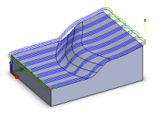

4 coupes de 0,010 po
Trois passes de décalage en Z
sur plusieurs chaînes
Activez cette option pour effectuer des coupes à différentes profondeurs.
Les passes de décalage en Z permettent de créer plusieurs passes avec un décalage en Z incrémentiel. Elles fonctionnent comme le nombre de passes de finition en Z dans les opérations 2D et sont particulièrement utiles pour supprimer une quantité fixe de brut en plusieurs passes.
|
 |
4 coupes de 0,010 po |
Trois passes de décalage en Z |